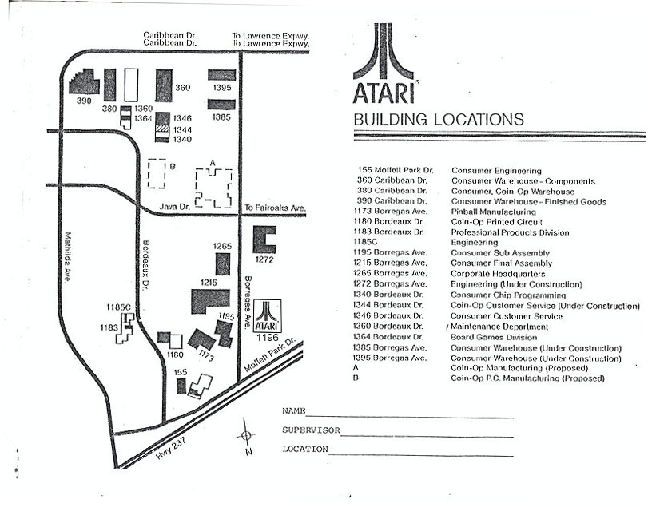

This Interactive map has been the result of many hours of driving and photo
taking and was made possible through the efforts of Gary Rubio (Former
Atari Consumer Engineering), Lynn Kopatich (Former Atari Operations) and
Curt Vendel (Atari Historical Society Founder). The below
map is a 1978 Facilities Map and does not
include many buildings which Atari occupied in the later years, therefor
below this map are links to the additional facilities
occupied by Atari, I hope everyone enjoys this look at Atari from a buildings
view.
Click
on each building to view a photo of it.
(Some
photo's have History Notes on the building)
